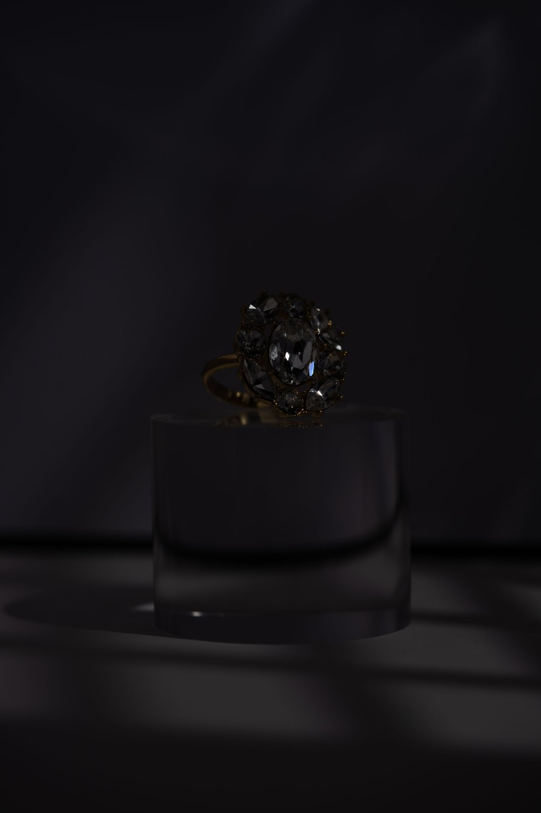
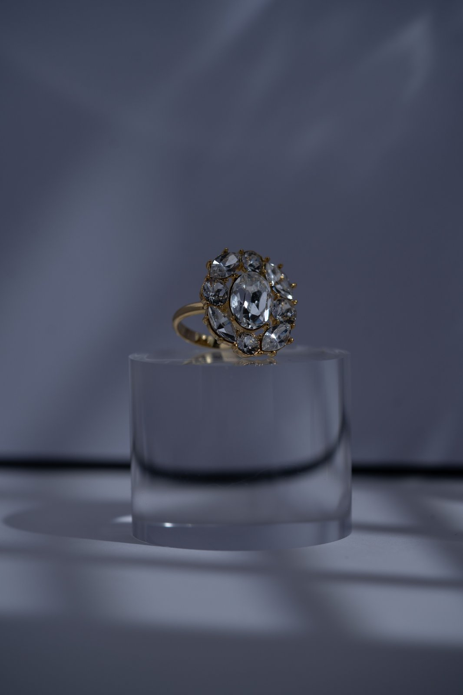
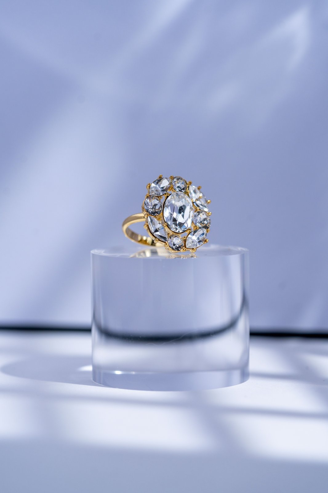
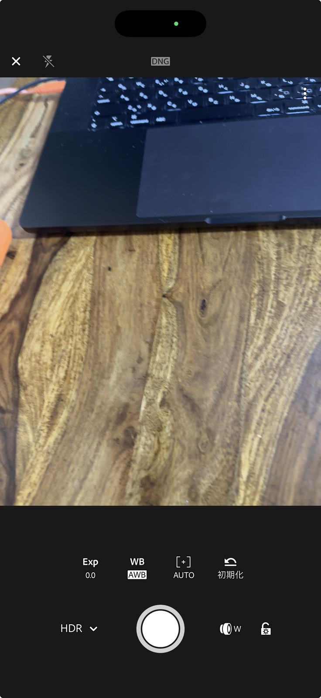
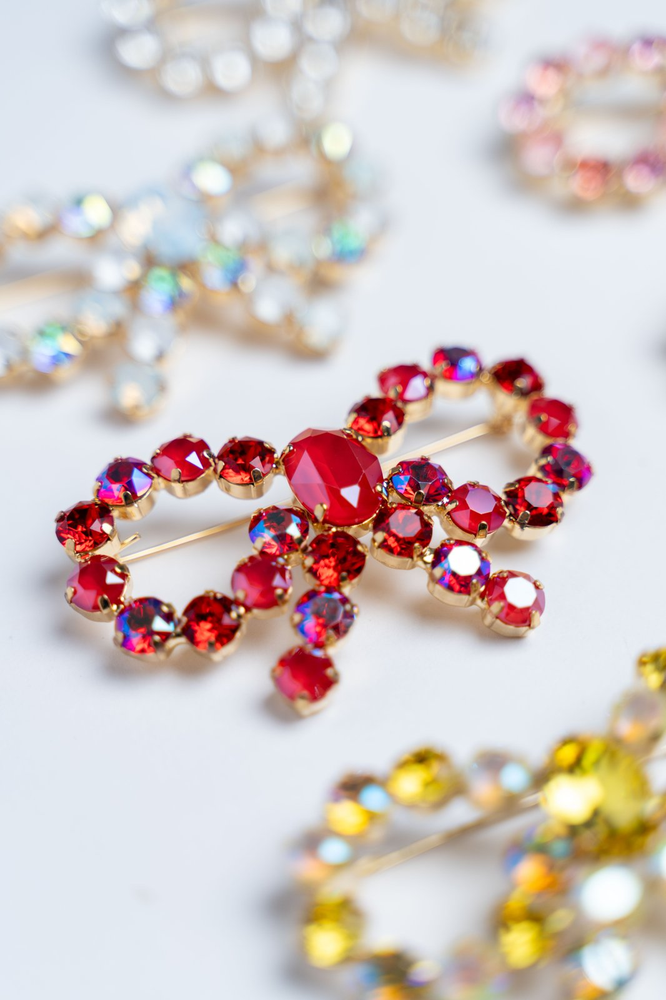
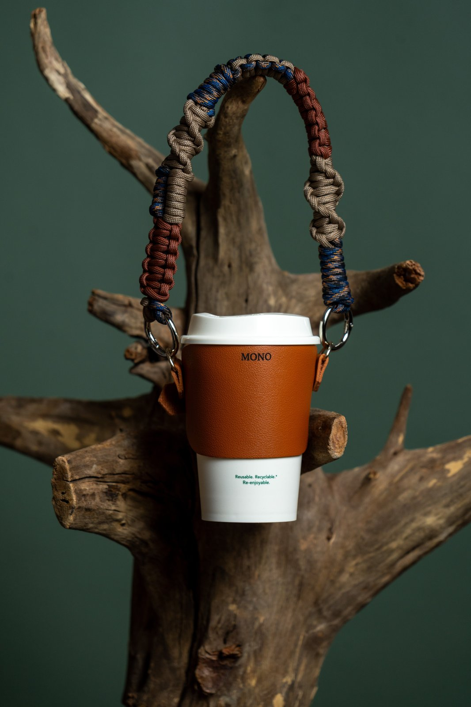
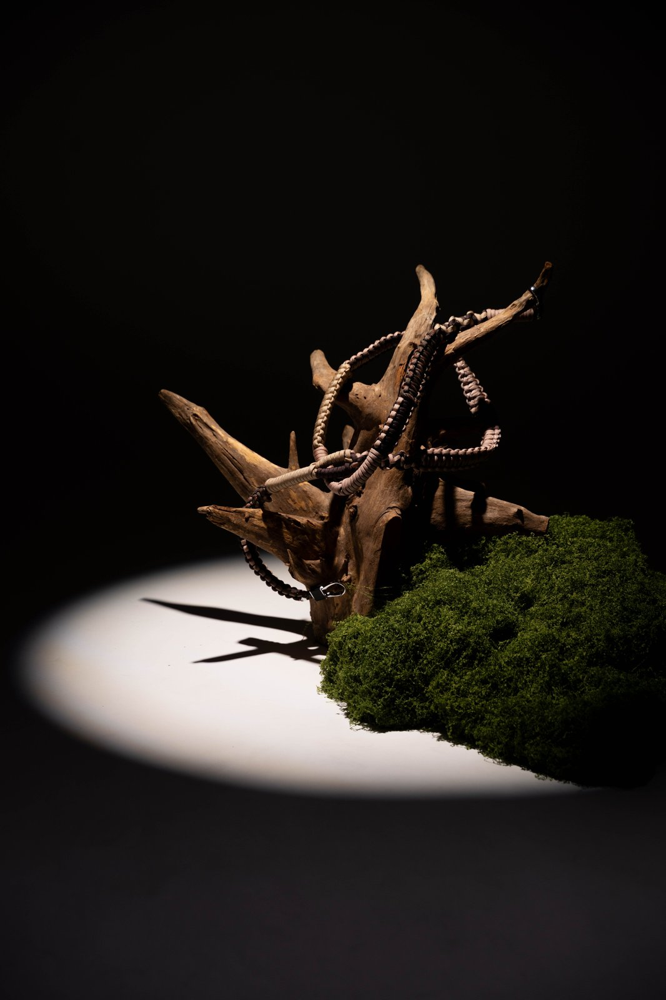

DNG（RAW）で
撮る手順
- アプリを開く
- 右下のカメラアイコンをタップ
- 上の「DNG」を選ぶ（＝RAW）
- あとは普通に撮るだけ
DNGが選べない機種は「JPG」でOK
出来上がった状態で渡される。おいしいけど、後から味付けは変えられない。
まだ何も処理されていない状態。塩加減も火加減も、全部自分で決められる。
JPEGは、色や明るさを調整できる幅が狭い。
RAWなら、劣化させずに自分のイメージ通りに仕上げられる。




DNGが選べない機種は「JPG」でOK
今日は全員Lightroomで揃えるので、Proの人もLightroomでOK

反射板（白い紙）で正面を起こす／いちばん使う当て方

反射板なしでOK／セッティングが簡単

基本は上の2パターンを覚える
機種が違っても、光が同じならそんなに変わらない
この3つだけで、写真はほぼ完成します
新しいカメラより先に、ライトに投資
3,000〜5,000円。小さい商品ならこれで十分。
15,000〜25,000円。大きい商品や複数並べも余裕。
いきなり高いものは不要。今の売上に合わせて選ぶ ／ このあと質問タイム → 2次会で個別撮影も